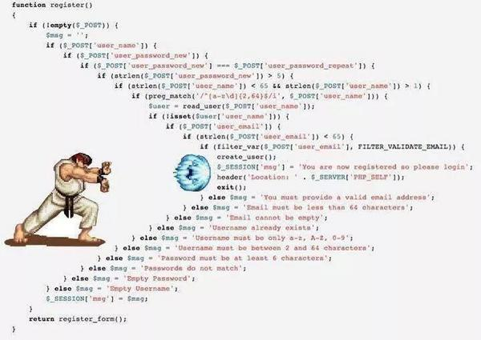

Building User Interfaces
with React & Flux

Thank You
Burlington JS
John, Matt, Donnie
Who's this guy?
Ben Glassman
Director of Web Development, Vermont Design Works*
Full-stack dev and team lead working on custom web applications. *Interested in writing apps in React with ES6? We are hiring!
Things I Like
My Catahoula Leopard Dog Trevor
Not My Favorite Thing
Legacy Code
(a.k.a. Anything I wrote before last week)

Overview
What is UI Hard?
What is React?
What are Components?
What is React Good At?
How is React Designed?
What is JSX?
What is Flux?
Why is Building Interactive
UI's Hard?
- HTML was designed for documents not user interfaces
- We now use it to build complex user interfaces
- These interfaces are highly interactive
- They have lots of state behind them
- This state changes over time
- State is spread out throughout code
- State is can be changed in many places
- The UI must kept up to date when state changes
- How do separate UI elements communicate or share state
What exactly is state?
Abstract: The data required to render a given user interface.
Concrete: JSON objects.
const state = {
comments: [
{id: 1, text: 'It was great'},
{id: 2, text: 'It was meh'}
],
loading: false
};How does React help?
- Delineate changing state (state) and unchanging state (props)
- Encourage limited mutation of state (props, smart/container vs. dumb components)
- Make mutation of state explicit (setState)
- Encapsulate how state effects rendering into a single place (render)
What is React?
A library for creating user interfaces
with composable components.
Library vs. Framework
React does...
- Declarative nestable views
w/ option handling/defaults
and template rendering
w/ event delegation
React doesnt...
- HTTP/Network Communication
- Validation
- Models/Persistence
- Routing (react router)
- Services
- & More
So React is a
Templating Library?
Not really...
Less Like: Rendering HTML (Handlebars, jade, haml).
More Like: Re-usable Components w/ configurable behavior (Angular Directives, jQuery UI Widgets, Web Components)
Example React Component
What will this component render? What behavior will it exhibit?
What is a Component
A component is a small composable unit of a user interface.
A component knows how to transform data into DOM output.
Smaller components can be composed together to create more complex user interfaces because they nest like HTML tags.
Creating a Component
The least you have to do to create a component is provide a render function. For many components this is all you need.
Rendering your Component
To render a component, we use React.render to mount our component to a DOM node
Props
Data & Options for Components
- Options or data needed by the component to render
- Like jQuery plugin options
- Immutable by convention
- Defaults & Validation included
- Syntax like HTML attributes
<MyComponent propname="value" >Props Example:
Option Validation (propTypes) and defaults (defaultProps)
State
Why is Building Interactive
UI's Hard?
- HTML was designed for documents not user interfaces
- We now use it to build complex user interfaces
- These interfaces are highly interactive
- They have lots of state behind them
- This state changes over time
- State is spread out throughout code
- The UI must update whenever state changes
- How do separate UI elements communicate
What exactly is state?
Abstract: The data required to render a given user interface.
Concrete: JSON objects.
const state = {
comments: [
{id: 1, text: 'It was great'},
{id: 2, text: 'It was meh'}
],
loading: false
};How does React help?
- Delineate changing state (state) and unchanging state (props)
- Encourage limited mutation of state (props, smart vs. dumb components)
- Make mutation of state explicit (setState)
- Encapsulate how state effects rendering into a single place (render)
Example
What is a React Component
A composable user interface element that knows how to transform application state into
- HTML was designed for documents not user interfaces
- Complex user interfaces have a lot of state
What is State
State is a term that gets used a lot when talking about react and just refers to the underlying data that powers your application.
Examples of State for a user interface that shows a list of comments and allows the user to add comments.
var state = {
loading: false, // Are the comments loading?
comments: [
{id: 1, text: 'This is great'},
{id: 2, text: 'This is terrible'},
{id: 3, text: 'I am undecided'}
],
submitting: false, // Is the form submitting?
errors: ['Message field is required'] // Errors from the submission of the comment
}
Slides
Not a coder? Not a problem. There's a fully-featured visual editor for authoring these, try it out at http://slides.com.
Point of View
Press ESC to enter the slide overview.
Hold down alt and click on any element to zoom in on it using zoom.js. Alt + click anywhere to zoom back out.
Touch Optimized
Presentations look great on touch devices, like mobile phones and tablets. Simply swipe through your slides.
Fragments
Hit the next arrow...
... to step through ...
... a fragmented slide.
Fragment Styles
There's different types of fragments, like:
grow
shrink
fade-out
current-visible
highlight-red
highlight-blue
Transition Styles
You can select from different transitions, like:
None -
Fade -
Slide -
Convex -
Concave -
Zoom
Themes
reveal.js comes with a few themes built in:
Black (default) -
White -
League -
Sky -
Beige -
Simple
Serif -
Blood -
Night -
Moon -
Solarized
Slide Backgrounds
Set data-background="#dddddd" on a slide to change the background color. All CSS color formats are supported.
Image Backgrounds
<section data-background="image.png">Tiled Backgrounds
<section data-background="image.png" data-background-repeat="repeat" data-background-size="100px">Video Backgrounds
<section data-background-video="video.mp4,video.webm">... and GIFs!
Background Transitions
Different background transitions are available via the backgroundTransition option. This one's called "zoom".
Reveal.configure({ backgroundTransition: 'zoom' })Background Transitions
You can override background transitions per-slide.
<section data-background-transition="zoom">Pretty Code
function linkify( selector ) {
if( supports3DTransforms ) {
var nodes = document.querySelectorAll( selector );
for( var i = 0, len = nodes.length; i < len; i++ ) {
var node = nodes[i];
if( !node.className ) {
node.className += ' roll';
}
}
}
}
Code syntax highlighting courtesy of highlight.js.
Marvelous List
- No order here
- Or here
- Or here
- Or here
Fantastic Ordered List
- One is smaller than...
- Two is smaller than...
- Three!
Tabular Tables
| Item | Value | Quantity |
|---|---|---|
| Apples | $1 | 7 |
| Lemonade | $2 | 18 |
| Bread | $3 | 2 |
Clever Quotes
These guys come in two forms, inline:
“The nice thing about standards is that there are so many to choose from”
and block:
“For years there has been a theory that millions of monkeys typing at random on millions of typewriters would reproduce the entire works of Shakespeare. The Internet has proven this theory to be untrue.”
Intergalactic Interconnections
You can link between slides internally, like this.
Speaker View
There's a speaker view. It includes a timer, preview of the upcoming slide as well as your speaker notes.
Press the S key to try it out.
Export to PDF
Presentations can be exported to PDF, here's an example:
Global State
Set data-state="something" on a slide and "something"
will be added as a class to the document element when the slide is open. This lets you
apply broader style changes, like switching the page background.
State Events
Additionally custom events can be triggered on a per slide basis by binding to the data-state name.
Reveal.addEventListener( 'customevent', function() {
console.log( '"customevent" has fired' );
} );
Take a Moment
Press B or . on your keyboard to pause the presentation. This is helpful when you're on stage and want to take distracting slides off the screen.
Much more
- Right-to-left support
- Extensive JavaScript API
- Auto-progression
- Parallax backgrounds
- Custom keyboard bindings